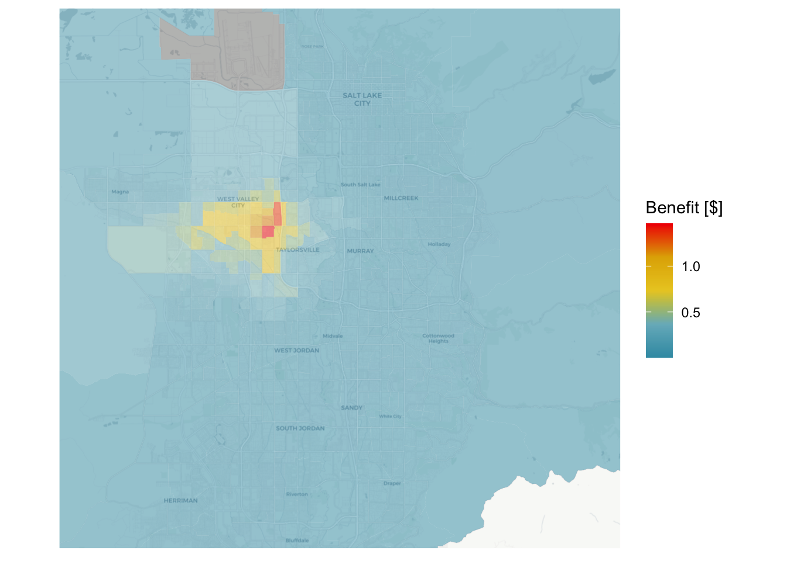
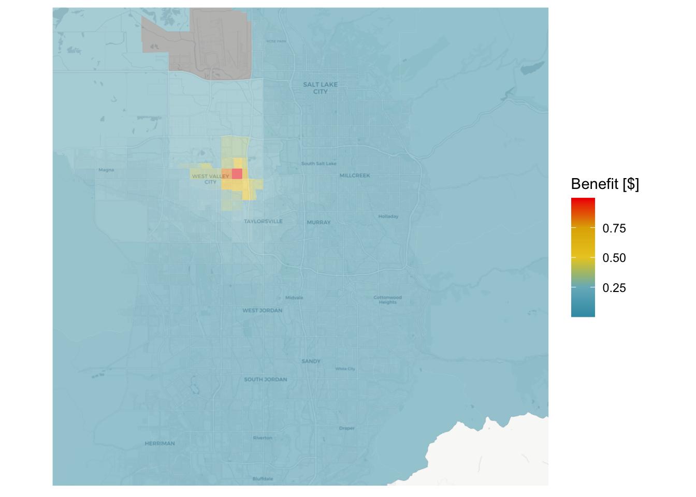
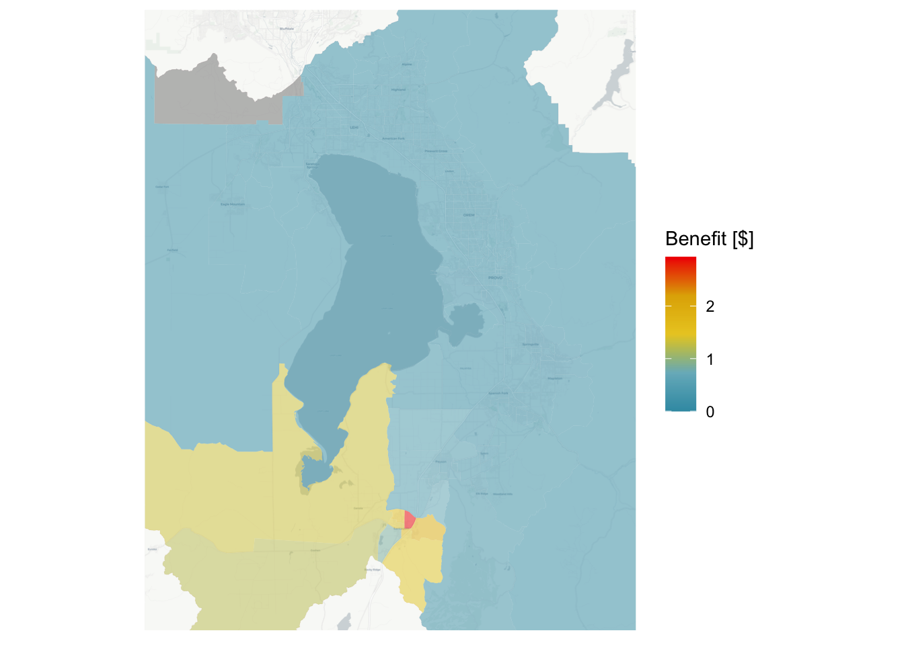
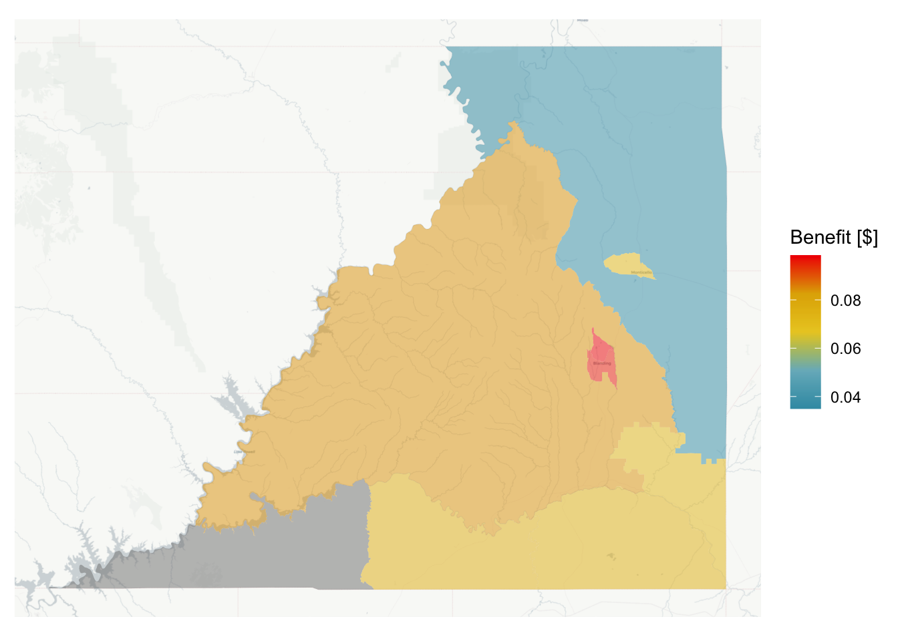
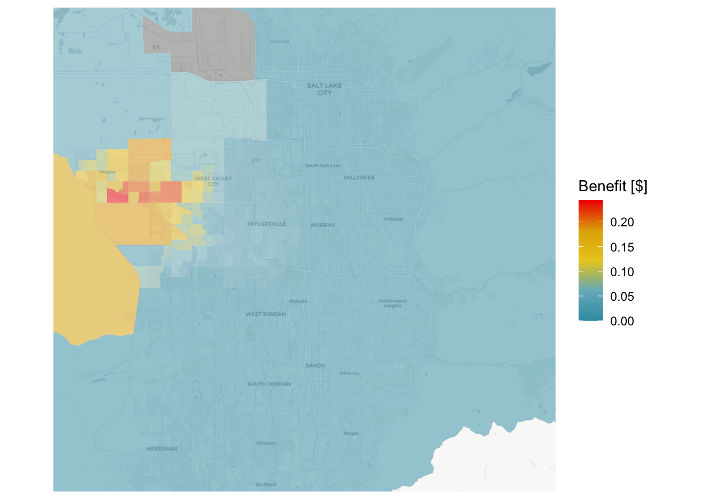

tar_load(bg)
tar_load(bg_acs)
sl_base <- tar_read(sl_access)
tar_load(mkt_betas)5 Application
In this section, we develop a series of scenarios to which we apply the models estimated in Chapter 4. These scenarios are constructed to ascertain what may be the best strategy to improve nutrition access in a community. We first describe how each scenario was constructed, and then discuss the results together.
The accessibility of each scenario was to be determined using the approximated utility coefficients of the All model estimated in Chapter 4, U_{ij}= \beta_{MCLS}( k_{ij}) + \beta_{n-a} (\mathrm{NEMS-Availability}) + \beta_{n-c}\mathrm({NEMS-Cost}) + \\ \beta_{mkt} (\mathrm{Market Basket}) + \pmb{\beta}_{type}(\mathrm{Type}) \tag{5.1} and the total access benefit is defined as the consumer surplus given in Equation 3.3. Note that this benefit is denominated in units of utility (Ben-Akiva & Lerman, 1985), and the coefficients in Equation 5.1 serve to convert between the units of the variable and utility. Specifically, the \beta_{mkt} coefficient represents how many dollars of grocery cost a person is willing to spend to increase their utility by one unit.
In actuality, the utility formula in Equation 5.1 is a relative utility added by an unknown constant, U_{ij} = f(\mathbf{\beta}, X_{ij}) + C, but this C term is included in all the alternatives and therefore cancels out (Train, 2009) in estimation. This means we cannot asses the absolute value of utility, but we can assess the relative monetary benefit of the difference between two scenarios as \mathrm{Benefit} = \sum_{i}\left(-\frac{\omega_i}{\beta_{mkt}}(CS_i^1 - CS_i^1)\right) where a weight \omega accounts for the population in each origin zone i and the \beta_{mkt} converts the difference in utility into a dollar amount.
5.1 Scenario Descriptions
There are three general strategies we develop scenarios around:
- Erect a new grocery store in the community, in a place where one does not already exist.
- Improve an existing convenience store or dollar store so that it has the attributes of a full-service grocery store.
- Improve the transit and non-motorized access to stores in a region.
We implement all three strategies in scenarios on the west Salt Lake valley community. We also implement strategy 1 (a new store) in the San Juan and Utah County communities for comparison.
5.1.1 Erect a new store
This strategy assumes that the nutrition environment would benefit from a new store located in a place that presently has low grocery store access. To examine the potential for this strategy to improve access to nutrition in each community, we calculate the change in destination choice log-sum when a new store is added to the region in a location where access is currently poor. The new store is a full-service grocery store with a number of registers equal to the mean of other grocery stores in the community, and NEMS availability score, NEMS cost score, and market basket cost equivalent to the 75^{th} percentile for the community. Thus the store is expected to be better-than-average quality as perceived by the residents of the community. The location for this new store is at 4100 S and 2700 W in West Valley City.
5.1.2 Improve an existing store
This strategy assumes that existing stores are in locations that the community values and can access, but that those stores may not have high availability of quality goods. To examine the potential for this strategy to improve access to nutrition, we improve the attributes of an existing dollar store in the community so that it has the size, prices, and availability of goods as a full-service grocery store. As above, we create a full-service grocery store with a number of registers equal to the mean of other grocery stores in the community, and NEMS availability score, NEMS cost score, and market basket cost equivalent to the 75^{th} percentile for the community. Thus the store is expected to be better-than-average quality as perceived by the residents of the community; the difference from the previous scenario is that the improved store takes the place of an existing convenience store or dollar store.
The improved stores are at the following locations in each community:
- An ethnic store near 2700 W 3500 S in West Valley City (Salt Lake)
- A small grocery store in Santaquin (Utah County)
- A dollar store in Blanding (San Juan County)
5.1.3 Improve transit and non-motorized transport
This strategy assumes that people cannot easily travel to existing stores because they cannot or do not drive for a variety of reasons, and that the public and and active transport networks provide an insufficient level of service. To examine the potential for this strategy to improve access to nutrition, we improve the travel time costs in the Salt Lake community for non-motorized and public transportation in the region and calculate the change in destination choice log-sum.
For active transportation, the lack of pedestrian facilities across and alongside roads both in reality and in the OpenStreetMap dataset may substantially increase measured walk distances and times. In this scenario, we replace the times measured from OpenStreetMap using R5 with an idealized Euclidean distance function, t_{\mathrm{walk}} = \frac{\sqrt{2} * d'_{ij}}{v_{\mathrm{walk}}} \tag{5.2} where d'_{ij} is the Euclidean (straight-line) distance between i and j and v_{ij} is an average walking speed equivalent to 3.5 feet per second (Fitzpatrick et al., 2006). The distance is multiplied by the square root of 2 to reflect the Manhattan distance (along a gridded street system). We retain the cap on walking distance at 10 kilometers. Though this distance may radically understate the real walking distance, we are trying to create an idealized scenario of effectively frictionless active transport. For public transit, we assume that the frequency of service is such that all transfer and initial wait times are at most 5 minutes, and that no person must walk more than 10 minutes to access their first public transport service.
Travel times are improved in this way for all block group — store pairs in the west Salt Lake Valley community.
5.2 Scenario Results
Using the methodology described above, we recalculated the destination choice log-sum value for each block group under each scenario, and compared the change in accessibility resulting from the improvement.
s1_altd <- tar_read(s1_access)
s1cost <- bg |> select(id = GEOID) |> filter(substr(id, 3, 5) == "035") |>
left_join(bg_acs, by = c("id" = "geoid")) |>
sf::st_transform(4326) |>
left_join(sl_base |> rename(base = dclogsum)) |>
left_join(s1_altd |> rename(alt = dclogsum)) |>
mutate(diff = (base - alt) / mkt_betas["SaltLake.market"])Joining with `by = join_by(id)`
Joining with `by = join_by(id)`pal <- wesanderson::wes_palette("Zissou1", 100, type = "continuous")
ggplot(s1cost, aes(fill = diff)) +
ggspatial::annotation_map_tile(type = "cartolight", zoom = 12) +
geom_sf(lwd = 0, alpha = 0.5) +
scale_x_continuous(limits = c(-112.11, -111.7)) +
scale_y_continuous(limits = c(40.5, 40.8)) +
theme(axis.text.x = element_blank(),
axis.ticks.x = element_blank(),
axis.text.y = element_blank(),
axis.ticks.y = element_blank()) +
scale_fill_gradientn("Benefit [$]", colours = pal)Loading required namespace: raster
The legacy packages maptools, rgdal, and rgeos, underpinning the sp package,
which was just loaded, will retire in October 2023.
Please refer to R-spatial evolution reports for details, especially
https://r-spatial.org/r/2023/05/15/evolution4.html.
It may be desirable to make the sf package available;
package maintainers should consider adding sf to Suggests:.
The sp package is now running under evolution status 2
(status 2 uses the sf package in place of rgdal)
Please note that rgdal will be retired during October 2023,
plan transition to sf/stars/terra functions using GDAL and PROJ
at your earliest convenience.
See https://r-spatial.org/r/2023/05/15/evolution4.html and https://github.com/r-spatial/evolution
rgdal: version: 1.6-7, (SVN revision 1203)
Geospatial Data Abstraction Library extensions to R successfully loaded
Loaded GDAL runtime: GDAL 3.5.3, released 2022/10/21
Path to GDAL shared files: /Library/Frameworks/R.framework/Versions/4.3-arm64/Resources/library/rgdal/gdal
GDAL does not use iconv for recoding strings.
GDAL binary built with GEOS: TRUE
Loaded PROJ runtime: Rel. 9.1.0, September 1st, 2022, [PJ_VERSION: 910]
Path to PROJ shared files: /Library/Frameworks/R.framework/Versions/4.3-arm64/Resources/library/rgdal/proj
PROJ CDN enabled: FALSE
Linking to sp version:1.6-1
To mute warnings of possible GDAL/OSR exportToProj4() degradation,
use options("rgdal_show_exportToProj4_warnings"="none") before loading sp or rgdal.
Zoom: 12
Figure 5.1 shows the geographic distribution of benefits associated with locating a new store at a site in the Salt Lake community. The benefits are largest immediately next to the new store, where they exceed 1 for each household each time the household makes a trip to a grocery store.
s2_altd <- tar_read(s2_access)
s2cost <- bg |> select(id = GEOID) |> filter(substr(id, 3, 5) == "035") |>
left_join(bg_acs, by = c("id" = "geoid")) |>
sf::st_transform(4326) |>
left_join(sl_base |> rename(base = dclogsum)) |>
left_join(s2_altd |> rename(alt = dclogsum)) |>
mutate(diff = (base - alt) / mkt_betas["SaltLake.market"])Joining with `by = join_by(id)`
Joining with `by = join_by(id)`pal <- wesanderson::wes_palette("Zissou1", 100, type = "continuous")
ggplot(s2cost, aes(fill = diff)) +
ggspatial::annotation_map_tile(type = "cartolight", zoom = 12) +
geom_sf(lwd = 0, alpha = 0.5) +
scale_x_continuous(limits = c(-112.11, -111.7)) +
scale_y_continuous(limits = c(40.5, 40.8)) +
theme(axis.text.x = element_blank(),
axis.ticks.x = element_blank(),
axis.text.y = element_blank(),
axis.ticks.y = element_blank()) +
scale_fill_gradientn("Benefit [$]", colours = pal)Zoom: 12
Figure 5.2 shows the results of the scenario improving an existing store in the Salt Lake community. Compared to the results of the new store scenario, the scale of the benefits are not as substantial (a maximum per-household-trip benefit of less than $1), and seem to not cover quite as large a geographic region. Figure 5.3 shows the results of improving a store in Utah and San Juan Counties. As in Salt Lake, the benefits are most strongly concentrated in the immediate vicinity of the improved store. One interesting observation — especially in Utah County — is that the improvements are felt more strongly in the block groups near the improved store that have lower availability of other options. The block group in Utah County directly containing the improvement sees a per-household-trip benefit well over $2, considerably more than the maximum benefit in Salt Lake. This is intuitive, as the improvement of a store matters less if the stores close to you are already sufficient.
tar_load(wf_access)
tar_load(ru_access)
tar_load(s2_access_ut)
tar_load(s2_access_sj)
pal <- wesanderson::wes_palette("Zissou1", 100, type = "continuous")
s2cost_ut <- bg |> select(id = GEOID) |> filter(substr(id, 3, 5) == "049") |>
left_join(bg_acs, by = c("id" = "geoid")) |>
sf::st_transform(4326) |>
left_join(wf_access |> rename(base = dclogsum)) |>
left_join(s2_access_ut |> rename(alt = dclogsum)) |>
mutate(diff = (base - alt) / mkt_betas["Utah.market"])Joining with `by = join_by(id)`
Joining with `by = join_by(id)`ggplot(s2cost_ut, aes(fill = diff)) +
ggspatial::annotation_map_tile(type = "cartolight", zoom = 12) +
scale_x_continuous(limits = c(-112.1, -111.5)) +
scale_y_continuous(limits = c(39.9, 40.48)) +
geom_sf(lwd = 0, alpha = 0.5) +
theme(axis.text.x = element_blank(),
axis.ticks.x = element_blank(),
axis.text.y = element_blank(),
axis.ticks.y = element_blank()) +
scale_fill_gradientn("Benefit [$]", colours = pal)Zoom: 12s2cost_sj <- bg |> select(id = GEOID) |> filter(substr(id, 3, 5) == "037") |>
left_join(bg_acs, by = c("id" = "geoid")) |>
sf::st_transform(4326) |>
left_join(ru_access |> rename(base = dclogsum)) |>
left_join(s2_access_sj |> rename(alt = dclogsum)) |>
mutate(diff = (base - alt) / mkt_betas["SanJuan.market"])Joining with `by = join_by(id)`
Joining with `by = join_by(id)`ggplot(s2cost_sj, aes(fill = diff)) +
ggspatial::annotation_map_tile(type = "cartolight", zoom = 10) +
geom_sf(lwd = 0, alpha = 0.5) +
theme(axis.text.x = element_blank(),
axis.ticks.x = element_blank(),
axis.text.y = element_blank(),
axis.ticks.y = element_blank()) +
scale_fill_gradientn("Benefit [$]", colours = pal)Zoom: 10

The results of the third scenario, improving the access of non-motorized and public transit access to stores, are shown in Figure 5.4. This benefit is spread over a larger area, and is concentrated on the 35 MAX bus rapid transit corridor where the improvement in walk access time to transit couples with high frequency transit service to large grocery stores on the corridor. The per-household-trip benefit is very small however, with a maximum benefit on the order of $0.25.
s3_altd <- tar_read(s3_access)
s3cost <- bg |> select(id = GEOID) |> filter(substr(id, 3, 5) == "035") |>
left_join(bg_acs, by = c("id" = "geoid")) |>
sf::st_transform(4326) |>
left_join(sl_base |> rename(base = dclogsum)) |>
left_join(s3_altd |> rename(alt = dclogsum)) |>
mutate(diff = (base - alt) / mkt_betas["SaltLake.market"])Joining with `by = join_by(id)`
Joining with `by = join_by(id)`pal <- wesanderson::wes_palette("Zissou1", 100, type = "continuous")
ggplot(s3cost, aes(fill = diff)) +
ggspatial::annotation_map_tile(type = "cartolight", zoom = 12) +
geom_sf(lwd = 0, alpha = 0.5) +
scale_x_continuous(limits = c(-112.11, -111.7)) +
scale_y_continuous(limits = c(40.5, 40.8)) +
theme(axis.text.x = element_blank(),
axis.ticks.x = element_blank(),
axis.text.y = element_blank(),
axis.ticks.y = element_blank()) +
scale_fill_gradientn("Benefit [$]", colours = pal)Zoom: 12
df <- list(
"New Store" = s1cost,
"Salt Lake Valley" = s2cost,
"Utah County" = s2cost_ut,
"San Juan County" = s2cost_sj,
"Improved Transport" = s3cost
) |>
bind_rows(.id = "Scenario") |>
sf::st_set_geometry(NULL) |>
mutate(
hh = households * diff,
nw = (100 - white)/100 * households * diff,
li = households * lowincome/100 * diff
) |>
summarise(
across(hh:li, ~scales::dollar(sum(.x, na.rm = TRUE) / mkt_betas["SaltLake.market"] * -1)),
.by = Scenario
)
if(!knitr::pandoc_to("docx")){
kbl(df, booktabs = TRUE, col.names = c("Scenario", "Households", "Non-white", "Low-Income"),
digits = 0) |>
add_header_above(c(" " = 1, "Weighted by" = 3)) |>
group_rows(group_label = "Improved Store", start_row = 2, end_row = 4) |>
kable_styling()
}| Scenario | Households | Non-white | Low-Income |
|---|---|---|---|
| New Store | $5,538,988 | $2,449,404 | $961,684 |
| Improved Store | |||
| Salt Lake Valley | $2,849,176 | $1,364,404 | $569,364 |
| Utah County | $1,516,458 | $245,638 | $233,778 |
| San Juan County | $52,152.69 | $26,914.35 | $18,280.71 |
| Improved Transport | $872,015 | $393,554 | $120,078 |
Although comparing the geographic distribution of benefits is helpful, the aggregate benefit is more likely to guide policy. Additionally, the aggregate benefits can be weighted in different ways to understand the effects of the various policies on different populations. Table 5.1 presents the aggregate benefit from each of the three scenarios (and the result of the second scenario in all three communities). The Households column multiplies the difference in destination choice log-sum at each block group by the number of households in that block group, while the non-white and low-income columns weight the difference by the share of non-white individuals and low-income households respectively. All demographic data comes from the American Community Survey 5-year aggregations.
These alternate weighting schemes help to illustrate the potential equity of the benefit distribution should each scenario be pursued. The new store scenario in the Salt Lake community, for example, has a total benefit of approximately $5.5 million. Of this amount, somewhat less than half the benefits go to non-white individuals and less than one-fifth to low-income households. These ratios are more or less the same for the store improvement scenario and the improved transport scenario in the Salt Lake Valley. The Utah County store improvement, on the other hand, has a somewhat higher proportion of benefits going to low-income households relative to non-white households. This is a reflection of the lower minority population in southern Utah County vis a vis west Salt Lake valley, but is nonetheless a metric that program evaluators might pay attention to.
Overall, the improved store brings more than twice the benefits of improving non-automobile transportation, and the new store more than five times the benefits. Understanding the costs of these various alternatives is outside the scope of this research, but the level of infrastructure investment required to increase transportation level of service to that constructed in the simulation is likely an order of magnitude higher than the cost of a single new grocery store. It should also be acknowledged that improving non-automobile infrastructure and services would have benefits beyond just grocery store trips that we do not attempt to enumerate here. It is also not clear whether the level of improvement simulated in the second scenario could be accomplished within the envelope of the existing store; it may be that such improvements would meet or exceed the cost of building a new store on a new site, along with stocking, staffing, and operating the store.